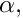
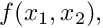
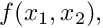
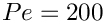
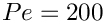

In this example we discuss the SUPG-stabilised solution of the 2D advection-diffusion problem
For large values of  this boundary data approaches a step, oriented at an angle  against the
against the  axis.
axis.
Until we get around to completing this example, here's the driver code. Fairly self-explanatory, isn't it?
#include "generic.h"
#include "advection_diffusion.h"
#include "meshes/rectangular_quadmesh.h"
using namespace std;
using namespace oomph;
{
{
}
{
source=0.0;
}
void wind_function(
const Vector<double>& x, Vector<double>& wind)
{
wind[0]=sin(6.0*x[1]);
wind[1]=cos(6.0*x[0]);
}
}
template<class ELEMENT>
{
public:
AdvectionDiffusionEquations<2>::AdvectionDiffusionSourceFctPt source_fct_pt,
AdvectionDiffusionEquations<2>::AdvectionDiffusionWindFctPt wind_fct_pt,
const bool& use_stabilisation);
RectangularQuadMesh<ELEMENT>*
mesh_pt()
{
return dynamic_cast<RectangularQuadMesh<ELEMENT>*>(
Problem::mesh_pt());
}
private:
AdvectionDiffusionEquations<2>::AdvectionDiffusionSourceFctPt
Source_fct_pt;
AdvectionDiffusionEquations<2>::AdvectionDiffusionWindFctPt
Wind_fct_pt;
};
template<class ELEMENT>
AdvectionDiffusionEquations<2>::AdvectionDiffusionSourceFctPt source_fct_pt,
AdvectionDiffusionEquations<2>::AdvectionDiffusionWindFctPt wind_fct_pt,
const bool& use_stabilisation)
: Source_fct_pt(source_fct_pt), Wind_fct_pt(wind_fct_pt),
Use_stabilisation(use_stabilisation)
{
if (use_stabilisation)
{
Doc_info.set_directory("RESLT_stabilised");
}
else
{
Doc_info.set_directory("RESLT_unstabilised");
}
unsigned n_x=40;
unsigned n_y=40;
double l_x=1.0;
double l_y=2.0;
Problem::mesh_pt() =
new RectangularQuadMesh<ELEMENT>(n_x,n_y,l_x,l_y);
unsigned num_bound = mesh_pt()->nboundary();
for(unsigned ibound=0;ibound<num_bound;ibound++)
{
unsigned num_nod= mesh_pt()->nboundary_node(ibound);
for (unsigned inod=0;inod<num_nod;inod++)
{
mesh_pt()->boundary_node_pt(ibound,inod)->pin(0);
}
}
unsigned n_element = mesh_pt()->nelement();
for(unsigned i=0;i<n_element;i++)
{
ELEMENT *el_pt = dynamic_cast<ELEMENT*>(mesh_pt()->element_pt(i));
el_pt->source_fct_pt() = Source_fct_pt;
el_pt->wind_fct_pt() = Wind_fct_pt;
}
cout <<"Number of equations: " << assign_eqn_numbers() << std::endl;
}
template<class ELEMENT>
{
unsigned num_bound = mesh_pt()->nboundary();
for(unsigned ibound=0;ibound<num_bound;ibound++)
{
unsigned num_nod=mesh_pt()->nboundary_node(ibound);
for (unsigned inod=0;inod<num_nod;inod++)
{
Node* nod_pt=mesh_pt()->boundary_node_pt(ibound,inod);
Vector<double> x(2);
x[0]=nod_pt->x(0);
x[1]=nod_pt->x(1);
Vector<double> u(1);
nod_pt->set_value(0,u[0]);
}
}
unsigned n_element = mesh_pt()->nelement();
for(unsigned i=0;i<n_element;i++)
{
ELEMENT *el_pt = dynamic_cast<ELEMENT*>(mesh_pt()->element_pt(i));
if (Use_stabilisation)
{
el_pt->compute_stabilisation_parameter();
}
else
{
el_pt->switch_off_stabilisation();
}
}
}
template<class ELEMENT>
{
ofstream some_file;
char filename[100];
unsigned npts=5;
sprintf(filename,"%s/soln%i.dat",Doc_info.directory().c_str(),
Doc_info.number());
some_file.open(filename);
mesh_pt()->output(some_file,npts);
some_file.close();
}
{
{
bool use_stabilisation=true;
use_stabilisation);
problem.newton_solve();
problem.doc_solution();
}
{
bool use_stabilisation=false;
use_stabilisation);
problem.newton_solve();
problem.doc_solution();
}
}
/////////////////////////////////////////////////////////////////// /////////////////////////////////...
~SUPGAdvectionDiffusionProblem()
Destructor. Empty.
void doc_solution()
Doc the solution.
RectangularQuadMesh< ELEMENT > * mesh_pt()
Overloaded version of the problem's access function to the mesh. Recasts the pointer to the base Mesh...
void actions_after_newton_solve()
Update the problem after solve (empty)
AdvectionDiffusionEquations< 2 >::AdvectionDiffusionWindFctPt Wind_fct_pt
Pointer to wind function.
SUPGAdvectionDiffusionProblem(AdvectionDiffusionEquations< 2 >::AdvectionDiffusionSourceFctPt source_fct_pt, AdvectionDiffusionEquations< 2 >::AdvectionDiffusionWindFctPt wind_fct_pt, const bool &use_stabilisation)
Constructor: Pass pointer to source and wind functions, and flag to indicate if stabilisation is to b...
AdvectionDiffusionEquations< 2 >::AdvectionDiffusionSourceFctPt Source_fct_pt
Pointer to source function.
bool Use_stabilisation
Flag to indicate if stabilisation is to be used.
DocInfo Doc_info
DocInfo object.
void actions_before_newton_solve()
Update the problem specs before solve: Reset boundary conditions to the values from the tanh solution...
Namespace for global parameters: Unforced problem with boundary values corresponding to a steep tanh ...
void wind_function(const Vector< double > &x, Vector< double > &wind)
Wind.
void get_boundary_values(const Vector< double > &x, Vector< double > &u)
Some "solution" for assignment of boundary values.
void source_function(const Vector< double > &x_vect, double &source)
Zero source function.
double Peclet
Peclet number.
double Alpha
Parameter for steepness of step in boundary values.
double TanPhi
Parameter for angle of step in boundary values: 45 degrees.
int main()
Driver code for 2D AdvectionDiffusion problem.
![\[ \mbox{Pe}\ \sum_{i=1}^2 w_i \left(x_1,x_2\right) \frac{\partial u}{\partial x_i} = \sum_{i=1}^2 \frac{\partial^2u}{\partial x_i^2} + f(x_1,x_2), \ \ \ \ \ \ \ \ \ \ (1) \]](form_0.png)
 , the source function 
, the source function   and assign the boundary conditions such that
and assign the boundary conditions such that ![\[ u_0(x_1,x_2) = \tanh(1-\alpha(x_1 \tan\Phi - x_2)), \ \ \ \ \ \ \ \ \ (3) \]](form_8.png)
![\[ \mathbf{w}\left(x_1,x_2 \right) = \left( \begin{array}{c} \sin(6x_2) \\ \cos(6x_1) \end{array} \right), \ \ \ \ \ \ \ \ \ (4) \]](form_12.png)

 and a Peclet number of , with and without SUPG stabilisation. The wire-mesh plot shows the solution computed on a 10x10 mesh, the shaded surface represents the solution obtained from an unstabilised solution on a 150x150 mesh. Note how SUPG stabilisation "suppresses the wiggles" on the relatively coarse mesh.
and a Peclet number of , with and without SUPG stabilisation. The wire-mesh plot shows the solution computed on a 10x10 mesh, the shaded surface represents the solution obtained from an unstabilised solution on a 150x150 mesh. Note how SUPG stabilisation "suppresses the wiggles" on the relatively coarse mesh.